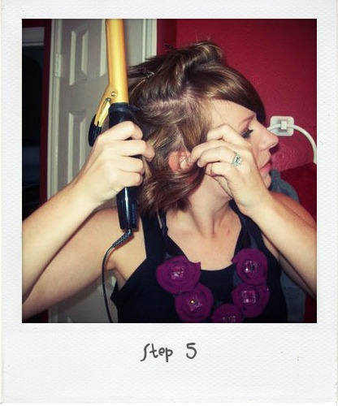

I am the girl that loves to change up my hair. I’ve experimented with different colors, lengths, and styles in my hair past. Long hair provides a lot of flexibility, but after growing my hair for 14 months for my wedding (trims were involved, so I didn’t have caveman hair for the big day) I made The Cut. I cut like a hundred inches ( really probably like 8 ) off my long flowy stringy locks. So, I was in need of styling options for short hair because I can’t just wear my hair the same way every. single. day. and short hair doesn’t allow as many options. WRONG… I have found so many! One of my favs and a fav of the commenters on Flickr Working Closet Pool is what I am going to show you today. So, let’s get this started, shall we? (Please disregard the roots shown in these pics. I repeat, disregard.)

Step One: Gather your supplies. You will need at least two clips to separate and pin up sections, a flexible hold hairspray (I prefer Aussie Sprunch Spray, which I told you about here.), a small brush, and your trusty one inch curling iron

Step Two: Start out with dry straightish hair. If you are blessed with natural wave or curl…we will just be enhancing the natural beauty. My hair isn’t that lucky. Cowlick City, People. You have never seen the likes of this. I have thrown many a hair stylist into shock and awe with these babies, calling their fellow stylists over to take a gander.  You might think it’s wavy, but no. You would be wrong. Those are just cowlicks. I promise. So, what you see here is the cowlicks tamed with a flat iron.


Step Three: Pin about half of your hair onto the top if your head, leaving the bottom free to get down to business. Separate the bangs because we aren’t curling them. I sported curled bangs in my childhood years and that is a look I do not care to revisit.


Step Four: Separate a small section of hair. I like to make my sections uneven so it adds more of a tousled look instead of a Shirley Temple look. Grab your curling iron, clamp the section about a half an inch away from the end and roll the iron away from your face. When hair is all rolled up, spritz with hairspray. Continue this pattern all around the bottom free section.

Step Five: If some of the curls are not optimal, you can pull them apart and recurl using the same technique.


Step Six: Unleash more hair out of your pins and continue curling in the same fashion as Step Four.


Step Seven: When you get the the section of hair at the crown of your head, I separate a front and a back section.


Step Eight: Roll the back section and make sure that you turn your curling iron vertically.


Step Nine: Separate the remaining hair along your natural part. Curl each section like you did in Step Four.


Step Ten: From here on is the important part. Once all hair is completely curled (and I know I look ravishing in this first pic… SIKE!), pull the curls apart with your fingers.
Step Eleven: Scrunch your hair gently.

Step Twelve: Separate bangs along your natural part line at this time.
Step Thirteen: Grab just the crown area of your hair and tease the roots.

Step Fourteen: Spray hair all over and scrunch some more.

Step Fifteen: All Done!
What I love about doing my hair like this is that I can just reach up and kind of scrunch it throughout the day if I feel like it is falling due to the massive amounts of humidity I face everyday. It seems like a lot of steps, but once you are used to it you will finish in no time. It typically takes me about 10 or 15 mins max when I am not being photographed as I style.


{kind=link}
{kind=link}
{kind=link}
{kind=link}
{kind=link}
{kind=link}
{kind=link}
Wow! How did you know I was looking for exactly this how-to? I subscribe to your blog – and there it was! How to curl/wave short hair. Awesome. Thanks! I’m going to try this tonight.
@Lindsay… I am a mind reader!! Thanks for reading and being a tipsy fan!
Love this DER!!!! Too cute!
@court thanks… you are lucky with those natural curls guuurl!
I am so glad I found your blog! My hair is about like yours–tried this today and it is super cute!! I will be sporting it today for my ski pass picture, thank you very much. xo
@Oh No She Didn’t !! I am so glad you are a Tipsy fan!! I bet you rocked the loose curls too guurl!
so adorable!
my hair is short and was done just like this, basically, for my wedding in october! http://www.flickr.com/photos/blueeyezz/4032797610/
i have to try and do it on my own now… 🙂
@Mel This look is so much easier than it looks and I swear you will get a million compliments!